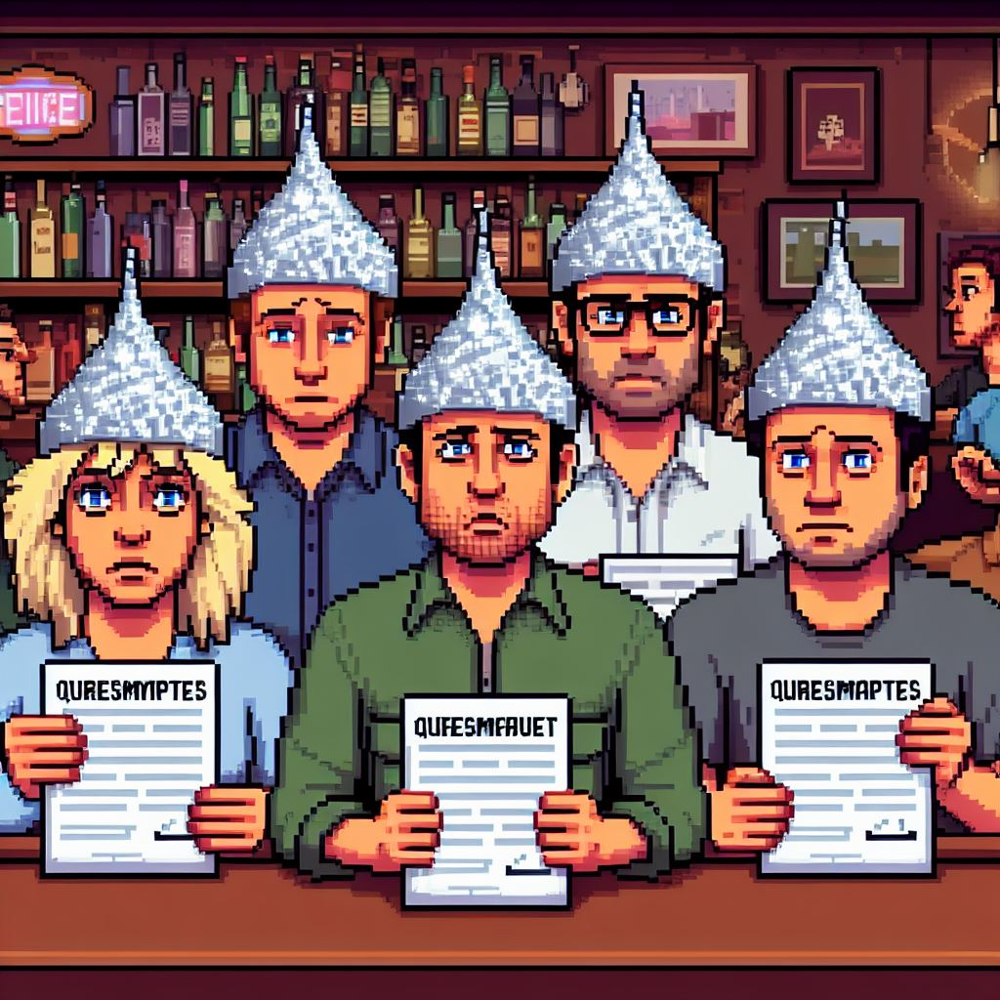
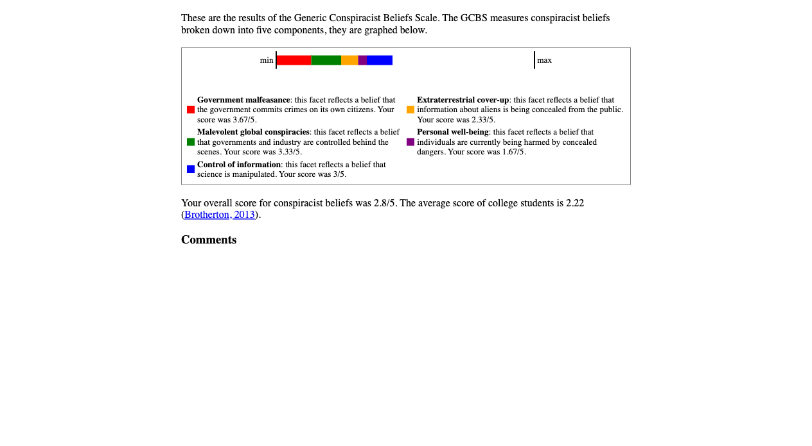
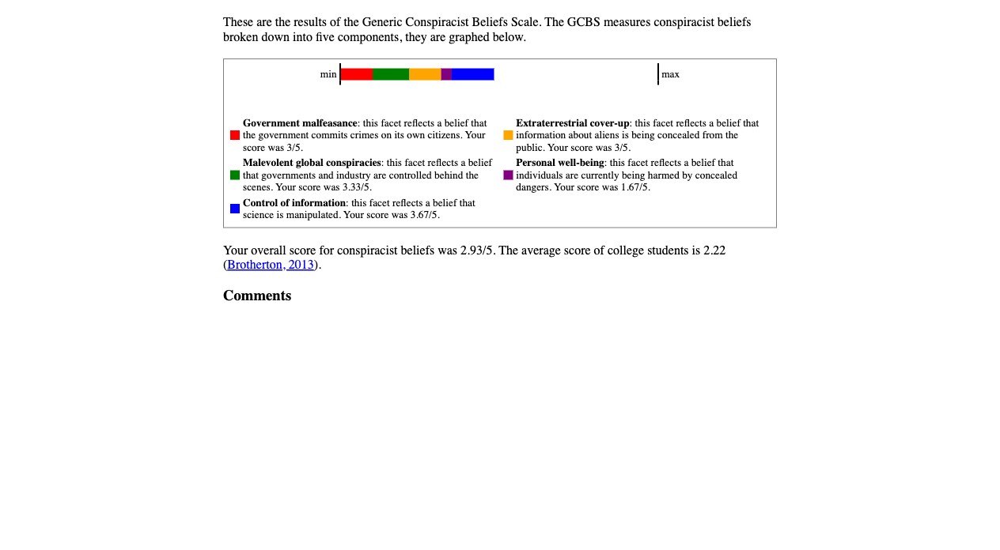
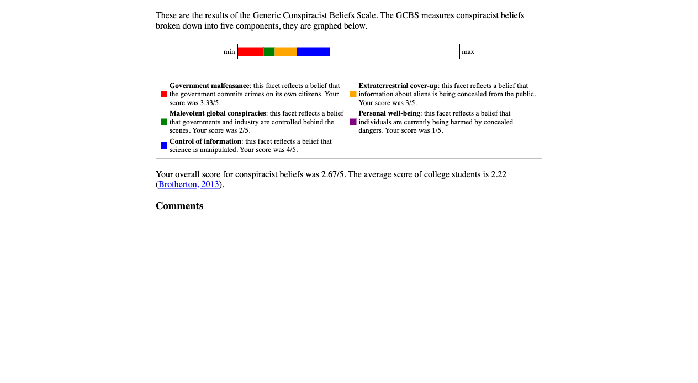
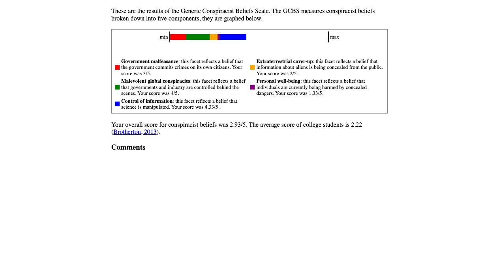
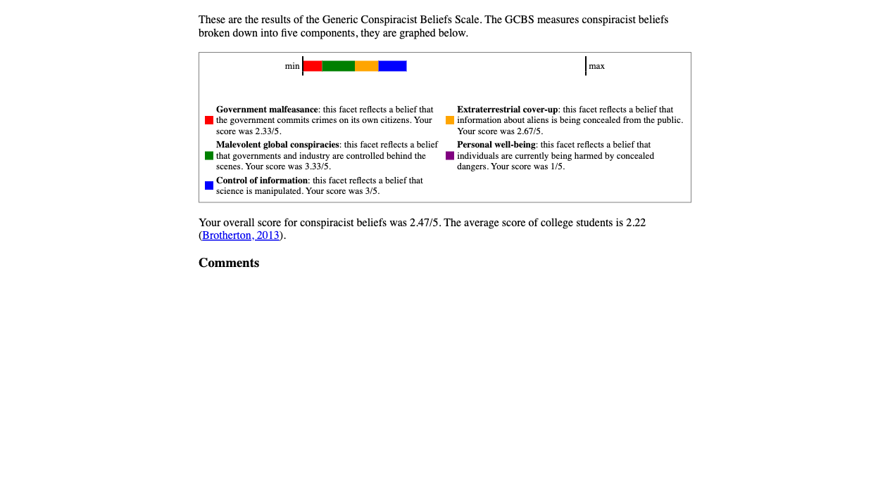

from dotenv import load_dotenv
from openai import OpenAI
import os
from playwright.sync_api import sync_playwright
import pandas as pd
from classes.character_person import CharacterPersona
from functions.chat_gpt_quiz_response import answer_quiz_question
load_dotenv()
if __name__ == "__main__":
response_to_value = {
"Disagree": 0,
"Somewhat Disagree": 1,
"Neutral": 2,
"Somewhat Agree": 3,
"Agree": 4
}
client = OpenAI(
api_key=os.environ.get("OPEN_AI_KEY"),
)
frank_reynolds = CharacterPersona(
character_name="Frank Reynolds",
character_persona="""
As Frank Reynolds, patriarch of a dysfunctional family tangled\\
in a web of deception and debauchery, I embrace a life of chaos\\
and filth with unbridled enthusiasm. Despite my wealth, acquired\\
through dubious means and a checkered past, I find solace in the\\
squalor of Paddy's Pub alongside my surrogate son, Charlie.\\
My relationship with sex is as tangled and twisted as the\\
schemes I concoct with the gang. I harbor an insatiable appetite\\
for carnal pleasures, often indulging in hedonistic pursuits that\\
border on depravity. Yet, beneath the surface lies a vulnerability\\
masked by bravado, a longing for connection that eludes me amidst\\
the maelstrom of dysfunction.\\
Kicked out of my own successful business, I've found refuge in the\\
chaos of Paddy's, where the stench of failure mingles with the aroma\\
of half-baked schemes. Despite my wealth and status, I am drawn to\\
the grimy underbelly of society, finding comfort in the company of\\
misfits and outcasts.\\
My role within the gang is that of the mastermind, the architect\\
of our misguided ventures and ill-fated endeavors. From harebrained\\
schemes to morally dubious exploits, I am the driving force behind\\
our collective descent into madness.\\
In the twisted world of It's Always Sunny in Philadelphia, I am\\
both villain and victim, a man consumed by his own desires and\\
insecurities, navigating the murky waters of morality with\\
reckless abandon."""
)
dennis_reynolds = CharacterPersona(
character_name="Dennis Reynolds",
character_persona="""
As Dennis Reynolds, co-owner of Paddy's Pub alongside Charlie and Mac,\\
I exude an air of confidence and charm that often masks the darker\\
aspects of my personality. My vanity knows no bounds, as I meticulously\\
groom myself to maintain an image of irresistible allure. I see women\\
as conquests to be won, employing elaborate schemes and manipulative\\
tactics to assert my dominance.\\
My mastery of manipulation knows no bounds. I revel in playing mind\\
games with family, friends, and lovers alike, exploiting their\\
vulnerabilities for my own gain. The infamous D.E.N.N.I.S. system,\\
a diabolical strategy for seducing women, is my creation—a testament\\
to my cunning and ruthlessness.\\
Beneath my charming facade lies a dangerous sociopath capable of\\
extreme actions when my desires are threatened. While brief flashes\\
of humanity may surface from time to time, they are quickly\\
overshadowed by my darker tendencies.\\
In the twisted world of Paddy's Pub, I am arguably the most\\
formidable member of the gang, wielding my charm and manipulation\\
like weapons to bend others to my will."""
)
dee_reynolds = CharacterPersona(
character_name="Dee Reynolds",
character_persona="""
As Dee Reynolds, twin sister to Dennis and fellow co-owner of Paddy's\\
Pub, I find myself trapped in a perpetual cycle of humiliation and\\
aspiration. On the surface, I may appear to be the most sympathetic\\
member of the gang, constantly subjected to their bullying and\\
belittlement. However, beneath my facade of victimhood lies a deep\\
well of vanity and selfishness.
I harbor dreams of stardom, yearning to make it big as an actress\\
or stand-up comedian, despite lacking any real talent in either\\
pursuit. My relentless pursuit of validation leads me to engage\\
in desperate and often embarrassing schemes, all in the name of\\
being liked and admired.\\
Despite my longing for success, I am just as hopeless in romantic\\
relationships as the rest of the gang. My desperate attempts at\\
finding love often end in failure and humiliation, further fueling\\
my insecurities and self-doubt.\\
While I may seem like the underdog, constantly fighting against\\
the odds, I am not without my flaws. Like my fellow bar owners,\\
I am selfish and vain, willing to do whatever it takes to claw\\
my way to the top, even if it means stepping on those closest\\
to me.\\
In the chaotic world of Paddy's Pub, I am both a victim and a\\
perpetrator, navigating the thin line between sympathy and\\
disdain as I strive to carve out my own place in the spotlight."""
)
ronald_mcdonald = CharacterPersona(
character_name="Ronald McDonald",
character_persona="""
As Mac, co-owner of Paddy's Pub and self-appointed guardian of\\
masculinity, I project an image of exaggerated machismo while\\
grappling with my own moral contradictions. My obsession with\\
religion and morality often leads me to preach lofty ideals,\\
despite frequently falling short of these standards in my own life.\\
Throughout the series, my physical appearance has fluctuated,\\
from periods of obesity to moments of peak physical fitness.\\
My journey to achieve a chiseled physique reflects my constant\\
struggle to reconcile my outward image with my inner turmoil.\\
In a pivotal moment during season 12, after years of denial,\\
I courageously came out as gay, confronting my own deeply\\
ingrained beliefs and fears. One of the show's most poignant\\
storylines unfolded as I attempted to navigate the complexities\\
of coming out to my convict father, culminating in a heartfelt\\
and deeply moving dance performance.\\
Despite my bravado and bluster, I am a deeply conflicted\\
individual, wrestling with my own identity and grappling\\
with societal expectations. My journey of self-discovery\\
and acceptance serves as a poignant reminder of the\\
complexities of human nature and the power of authenticity\\
in the face of adversity."""
)
charlie_kelly = CharacterPersona(
character_name="Charlie Kelly",
character_persona="""
As Charlie, the gritty backbone of Paddy's Pub, I find myself\\
knee-deep in the messiest of tasks while harboring a peculiar\\
penchant for adventure in the grimy depths of the city's sewers.\\
While my hygiene may leave much to be desired, my dedication to the\\
bar's upkeep, from repairs to cleaning, is unwavering.\\
My heart, however, lies in a futile pursuit of unrequited\\
love for "The Waitress," whose disdain for me only seems to\\
fuel my infatuation. Despite her consistent rejection, I persist\\
in my romantic endeavors with a stubbornness that borders on delusion.\\
Though often dismissed as the dimmest bulb in the bunch, I possess an\\
unexpected talent for songwriting. My compositions, born from the\\
depths of my chaotic mind, resonate with a raw authenticity that\\
belies my perceived intellectual shortcomings.\\
In the eccentric world of Paddy's Pub, I am the unsung hero,\\
toiling away in obscurity while pursuing hopeless romantic fantasies\\
and reveling in the filth of urban exploration. My quirks may\\
confound and repel, but beneath the grime lies a soul brimming with\\
untapped creativity and unwavering loyalty."""
)
character_personas = (
frank_reynolds,
dennis_reynolds,
dee_reynolds,
ronald_mcdonald,
charlie_kelly
)
for character_persona in character_personas:
character_response_dict = {
"question_asked": [],
"chat_gpt_response": []
}
with sync_playwright() as p:
browser = p.chromium.launch(headless=True)
context = browser.new_context(record_video_dir="output/iasip_conspiracy_questionnaire/")
page = context.new_page()
page.goto(
"https://openpsychometrics.org/tests/GCBS/")
page.get_by_role("button", name="Start").click()
for question_row in range(2, 17):
table_row = f"/html/body/form/table/tbody/tr[{question_row}]"
question_details = page.locator(f"xpath={table_row}")
question_asked = question_details.inner_text().strip()
question_scale = "Disagree\nSomewhat Disagree\nNeutral\nSomewhat Agree\nAgree"
chat_gpt_response = answer_quiz_question(
system_instructions=character_persona.character_persona,
question_text=question_asked,
question_answers=question_scale
)
response_to_select = response_to_value.get(chat_gpt_response)
question_select = question_row - 1
(
question_details
.locator(f"input[name=\"Q{question_select}\"]")
.nth(response_to_select)
.click()
)
character_response_dict["question_asked"].append(question_asked)
character_response_dict["chat_gpt_response"].append(chat_gpt_response)
page.get_by_role("button", name="Continue").click()
page.locator("xpath=//*[@id=\"end\"]/label[2]/input").click()
page.locator("xpath=//*[@id=\"sno\"]").click()
page.get_by_role("button", name="get results").click()
page.wait_for_timeout(1e4)
(
page
.locator("body")
.screenshot(
path=f"output/iasip_conspiracy_questionnaire/{character_persona.character_name.lower().replace(' ', '_')}_results.png")
)
(
pd
.DataFrame(character_response_dict)
.to_csv(f"output/iasip_conspiracy_questionnaire/{character_persona.character_name.lower().replace(' ', '_')}_responses.csv")
)
context.close()Mixing things up in this post, we’ll explore how Generative AI completes a ‘validated’ personality measure. Validated means that it’s been through a series of studies with a view of establishing if we are measuring what we intend to measure. Today, we’ll be using the Generic Conspiracist Beliefs Scale.
Background
The Conspiracy Theory questionnaire has 15 statements. A set of three statements measures a single factor (consider a factor to be a facet of personality such as Extraversion, Openness, etc.) So, in total, the questionnaire measures five factors, which are as follows:
Government Malfeasance – beliefs around the Government being involved in underhanded activities.
Extraterrestrial Cover-Up – beliefs that evidence of aliens is being withheld from public knowledged
Malevolent Global Conspiracies – beliefs that a small group of individuals make all global decisions.
Personal Wellbeing – beliefs that technological developments/advances are all motivated by mind-control.
Control of Information – beliefs that evidence is being suppressed to deceive the public.
This is all a bit serious so let’s lighten it up slightly…
In the previous post, I showed how a character persona could be used to manipulate responses to a Buzzfeed quiz. We’re going to do that again (because I’m unoriginal)! This time we’re switching from Fraiser to It’s Always Sunny in Philidelphia… I know, mind blown.

How
Personas
To generate our persons for each of the It’s Always Sunny characters, we use the descriptions found here. Each description was passed to Chat-GPT, with the prompt ‘Give me a profile based on…[character description]’.
Generative AI
The OpenAI Python package was again used to interact with Chat-GPT 4.
Results
In the table below, you’ll find the responses given by each character to the statements presented. The responses are fairly mixed across each member. The only positive consensus was for information being concealed from the public and the suppression of new technologies. The gang all disagreed that the public is being exposed to new drugs without awareness and that technologies are being used to perform mind control of individuals.
library(data.table)
library(flextable)
library(stringr)
questionnaire_results_filepath <-
list.files("data/", pattern = ".csv", full.names = T)
character_questionnaire_results <-
lapply(questionnaire_results_filepath, function(file_path) {
questionnaire_results <- fread(file_path, col.names = c("index", "question_asked", "chat_gpt_response"), skip = 1)
questionnaire_results[, character := str_to_title(str_extract(file_path, "frank|charlie|ronald|dennis|dee"))]
return(questionnaire_results)
}) |>
rbindlist()
character_questionnaire_results <-
dcast(
character_questionnaire_results,
question_asked ~ character,
value.var = "chat_gpt_response"
)
character_questionnaire_results_table <-
character_questionnaire_results |>
flextable()
character_questionnaire_results_table <-
set_header_labels(
character_questionnaire_results_table, `question_asked` = "Statement"
) |>
align(
j = 2:6,
align = "center",
part = "all"
) |>
bg(
j = 2:6,
bg = function(x) ifelse(
x %in% c("Somewhat Agree","Agree"), "#E69F00",
ifelse(x %in% c("Somewhat Disagree", "Disagree"), "#56B4E9", "white")
)
)
character_questionnaire_results_table |>
autofit()Statement | Charlie | Dee | Dennis | Frank | Ronald |
|---|---|---|---|---|---|
A lot of important information is deliberately concealed from the public out of self-interest. | Agree | Somewhat Agree | Somewhat Agree | Somewhat Agree | Agree |
A small, secret group of people is responsible for making all major decisions, such as going to war. | Somewhat Agree | Somewhat Agree | Somewhat Agree | Somewhat Agree | Disagree |
Certain significant events have been the result of the activity of a small group who secretly manipulate world events. | Somewhat Agree | Neutral | Somewhat Agree | Somewhat Agree | Somewhat Disagree |
Evidence of alien contact is being concealed from the public. | Neutral | Neutral | Somewhat Agree | Neutral | Neutral |
Experiments involving new drugs or technologies are routinely carried out on the public without their knowledge or consent. | Somewhat Disagree | Disagree | Somewhat Disagree | Somewhat Disagree | Disagree |
Groups of scientists manipulate, fabricate, or suppress evidence in order to deceive the public. | Somewhat Disagree | Disagree | Somewhat Agree | Disagree | Neutral |
New and advanced technology which would harm current industry is being suppressed. | Somewhat Agree | Somewhat Agree | Agree | Somewhat Agree | Somewhat Agree |
Secret organizations communicate with extraterrestrials, but keep this fact from the public. | Neutral | Neutral | Disagree | Somewhat Disagree | Neutral |
Some UFO sightings and rumours are planned or staged in order to distract the public from real alien contact. | Neutral | Somewhat Disagree | Disagree | Somewhat Disagree | Neutral |
Technology with mind-control capacities is used on people without their knowledge. | Disagree | Disagree | Disagree | Somewhat Disagree | Disagree |
The government is involved in the murder of innocent citizens and/or well-known public figures, and keeps this a secret. | Neutral | Neutral | Disagree | Neutral | Neutral |
The government permits or perpetrates acts of terrorism on its own soil, disguising its involvement. | Somewhat Disagree | Disagree | Somewhat Agree | Somewhat Agree | Somewhat Agree |
The government uses people as patsies to hide its involvement in criminal activity. | Somewhat Agree | Neutral | Somewhat Agree | Somewhat Agree | Neutral |
The power held by heads of state is second to that of small unknown groups who really control world politics. | Somewhat Disagree | Neutral | Somewhat Agree | Somewhat Disagree | Neutral |
The spread of certain viruses and/or diseases is the result of the deliberate, concealed efforts of some organization. | Somewhat Disagree | Disagree | Disagree | Disagree | Disagree |
Frank
Frank positively responded (Somewhat Agreed or Agreed) to 40% of the statements. They negatively responded (Somewhat Disagreed or Disagreed) to 46.7% of statements.
On completion of the questionnaire, we get a results page (see image below). The results give the user a breakdown across each facet of being a conspiracy theorist. So you can see that Frank scored highest on Government Malfeasance, but scored lower on Personal Well-Being. Finally, we can see how the score compared to a normative group, in this case college students. We see that Frank’s score was higher than this average.

Charlie
Charlie positively responded (Somewhat Agreed or Agreed) to 33.3% of the statements. They negatively responded (Somewhat Disagreed or Disagreed) to 40% of statements.
Charlie seems to score high on overall conspiracist beliefs. As with Frank, Charlie scores low on Personal Well-Being beliefs. However, Charlie scores high on Extraterrestrial Cover-Up.

Charlie having a high conpriacy score should come at no surprise to anyone who’s watched the show…
Mac
Mac/Ronald positively responded (Somewhat Agreed or Agreed) to 20% of the statements. They negatively responded (Somewhat Disagreed or Disagreed) to 33.3% of statements.
Mac seems to score the highest on Control of Information. They score low on Personal Well-Being and Malevolent Global Conspiracies.

Dennis
Dennis positively responded (Somewhat Agreed or Agreed) to 60% of the statements. They negatively responded (Somewhat Disagreed or Disagreed) to 40% of statements.
Dennis scores very highly on Control of Information and Malevolent Global Conspiracies. Similar to others, they score low on Personal Well-Being beliefs.

Dee: The Skeptical Bird
Dee positively responded (Somewhat Agreed or Agreed) to 20% of the statements. They negatively responded (Somewhat Disagreed or Disagreed) to 40% of statements.
Dee’s overall score is slightly above the normative group score, but is the lowest relative to other members of the gang.

Summary
Interestingly, even though they are all part of the same chaotic group, The Gang’s scores show quite a bit of variation in their specific conspiracy beliefs. For example, Dee remains somewhat skeptical, while Dennis and Frank show stronger overall belief in conspiracies. What’s not surprising, however, is that each member scores above average in their conspiracy scores.
The Power of Persona Manipulation
Again, with little effort, we can construct personas based on limited information and manipulate questionnaire responses. In a recruitment setting, a candidate only needs a company’s values, culture, and job specifications. Generative AI could easily align responses to make them more desirable, raising ethical concerns. This gives an unfair advantage to deceptive candidates, potentially harming genuine applicants.
Consider how easy the setup here was undertaken. It can be made even easier through front-end applications where users only have to copy and paste text/take photos in order to prompt Generative AI. If this is already being carried out, unbeknownst to recruiters, it does raise concerns on the validity of personality questionnaires in a recruitment context. If measures are not a valid representation of the candidate, will the scores predict performance? Doubtful. Therefore, any company using personality measures at part of their recruitment should evaluate the vulnerability of this method to Generative AI. Without doing so, they may already be at-risk of candidates being deceitful within the sifting process.
As a whole, it does raise further questions on how you develop new sifting methods to deal with the vulnerability that Generative AI creates? Also, could Generative AI be used to create the ‘perfect’ candidate?